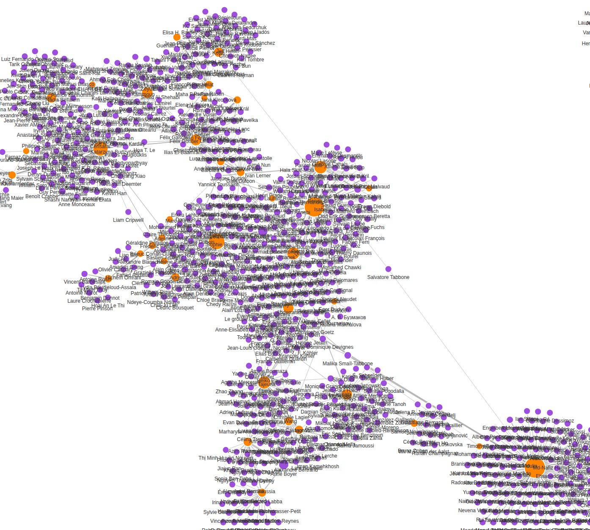
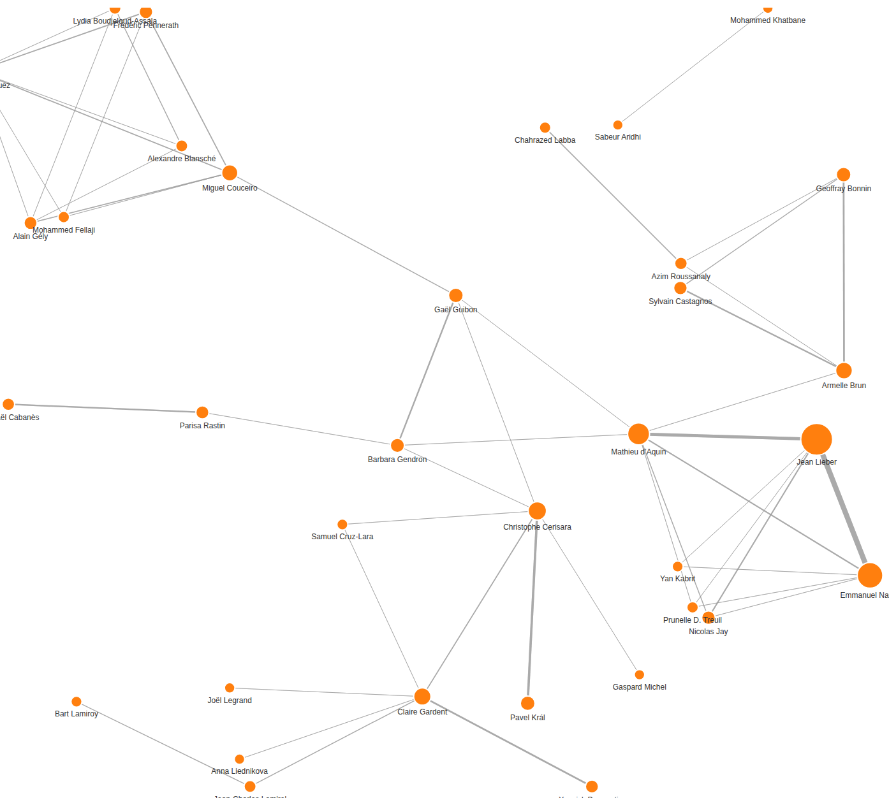

MosAIk visualisations
The following are a collection of (kind of interactive) graphs that are extracted from the
publication records of members of the MosAIk team. Those publication records are obtained from the OpenAlex system and only include publications that
are explicitly affiliated to LORIA. (so this is not complete!)
In all graphs, thikness of links correspond to number
of connections, and size of nodes to the total (sum) number of connections for the node.

Co-author network (nodes are authors and links are papers co-written). Orange nodes are members of MosAIk.
The same co-author network, but only for papers published since 2019.

The same co-author network but only including MosAIk members (so this is who works with whom within the team).
A citation network (nodes are authors, and links are citations between papers of which they are authors). Orange nodes are members of MosAIk.

Connections between MosAIk authors (orange) and topics (dark grey). Topics are obtained from OpenAlex and are not very good...
This is filtered to topics of at least 2 papers of MosAIk members.
Connections between MosAIk authors (orange) and topics (dark grey) for papers published since 2019. No filtering is applied in this case.
Connections between MosAIk authors (orange) and the sources of the publications (grey). Sources are journals, conferences or repositories.
Countries of affiliation (except France) of co-authors (grey) of MosAIk authors (orange).
Affiliations (except LORIA-related) of co-authors (dark purple) of MosAIk authors (orange).

Connections between MosAIk members and topics automatically extracted from paper abstracts.